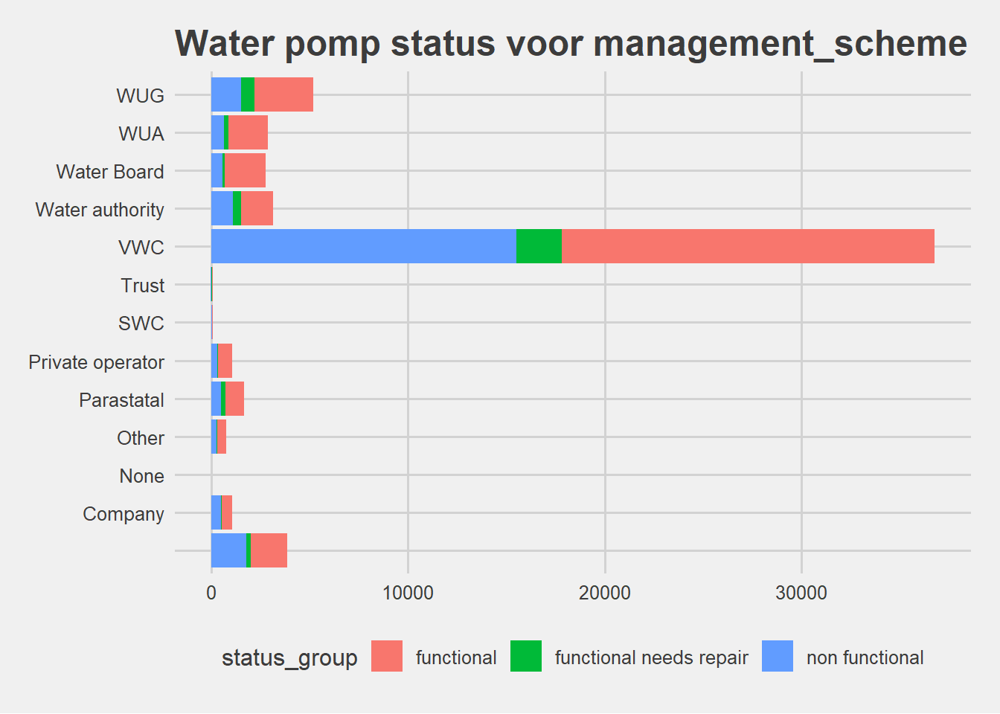
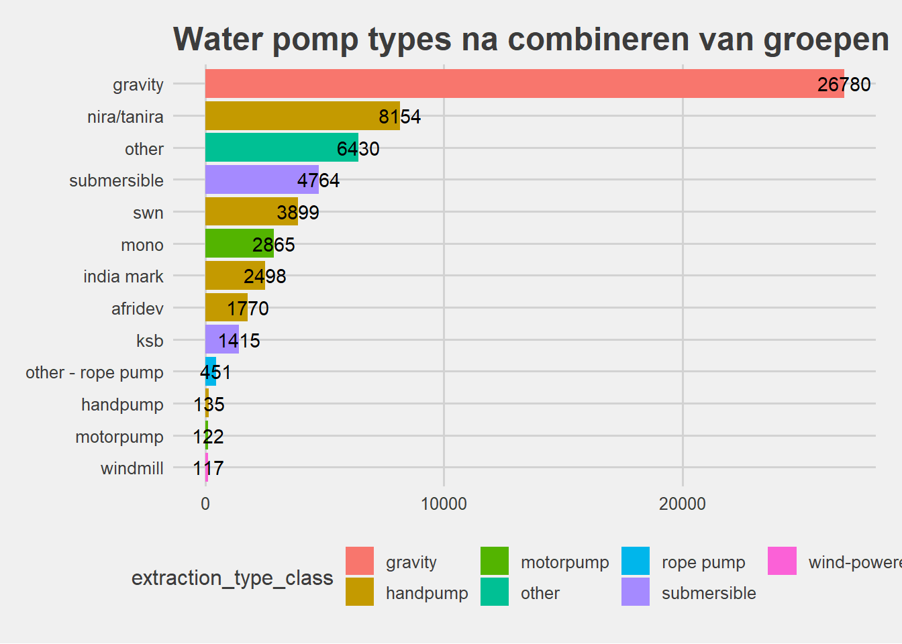
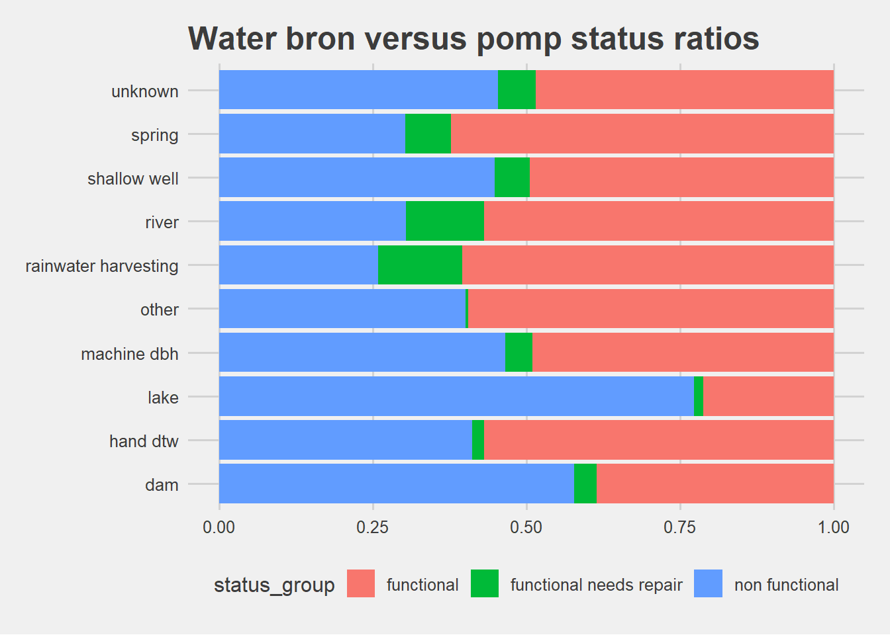
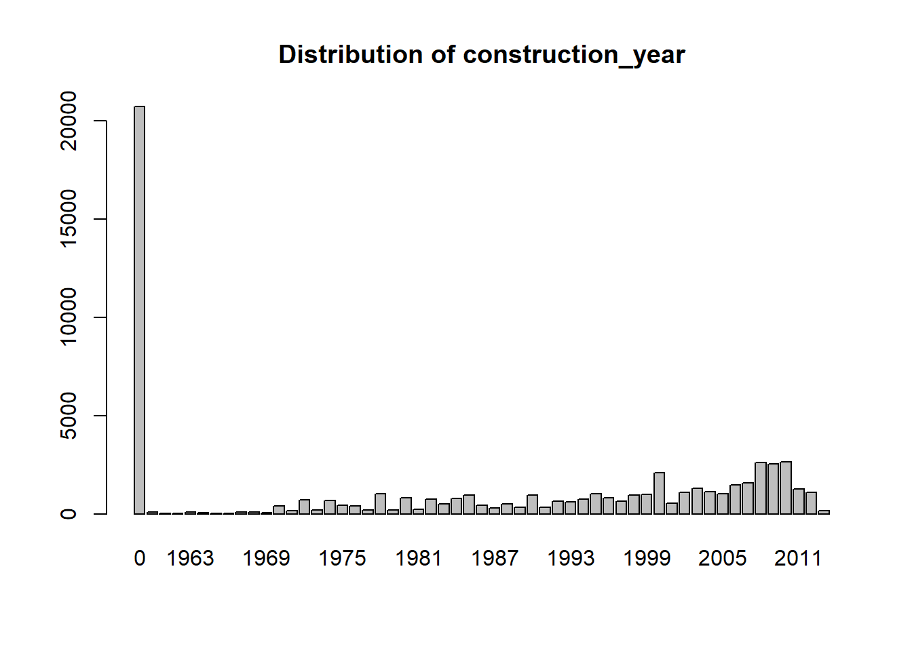

Grouped-variables
Lodewic van Twillert
10/24/2018
# Load libraries
library(tidyverse)## -- Attaching packages ---------------------------------- tidyverse 1.2.1 --## v ggplot2 3.0.0 v purrr 0.2.5
## v tibble 1.4.2 v dplyr 0.7.6
## v tidyr 0.8.1 v stringr 1.3.1
## v readr 1.1.1 v forcats 0.3.0## -- Conflicts ------------------------------------- tidyverse_conflicts() --
## x dplyr::filter() masks stats::filter()
## x dplyr::lag() masks stats::lag()library(broom)
library(ggthemes)
library(DT)
library(knitr)# Read the raw data
data <- read.csv("../data/raw/water_pump_set.csv")
labels <- read.csv("../data/raw/water_pump_labels.csv")
features <- read.csv("../data/raw/water_pump_features.csv")
# Merge labels and features into single dataset by id
df <- merge(data, labels, by="id")
# Let's add some more info to the feature info using tidyverse piping
feature_desc <- features %>% filter(Feature %in% colnames(data)) %>%
mutate(example = sapply(data[1, -1], as.character), # First row of the data without the 'id' column
unique = map_int(data[,-1],function(x) length(unique(x))),
type = map_chr(data[,-1], function(x) class(unlist(x))), #
nonzero = map_int(data[,-1], function(x) sum(as.character(x) != "0")), # Nonzero values, assuming 0 usually means NA
max_single = map_int(data[,-1], function(x) max(table(x))), # Observations of most occuring value
max_occurence = map_chr(data[,-1], function(x) names(which.max(table(x))))) # Highest occuring valueFeatures
Each waterpump is described by 39 features and a unique id. The basic steps of this project are to understand the available features and think about which of these we will have to include, exclude or transform before setting up a predictive model.
# Let's add some more info to the feature info using tidyverse piping
feature_desc <- features %>% filter(Feature %in% colnames(data)) %>%
mutate(example = sapply(data[1, -1], as.character), # First row of the data without the 'id' column
unique = map_int(data[,-1],function(x) length(unique(x))),
type = map_chr(data[,-1], function(x) class(unlist(x))), #
nonzero = map_int(data[,-1], function(x) sum(as.character(x) != "0")), # Nonzero values, assuming 0 usually means NA
max_single = map_int(data[,-1], function(x) max(table(x))), # Observations of most occuring value
max_occurence = map_chr(data[,-1], function(x) names(which.max(table(x))))) # Highest occuring value
# Let's glance at the numeric values in the dataset
feature_desc %>% filter(type %in% c("numeric", "integer")) %>% kable() | Feature | Description | example | unique | type | nonzero | max_single | max_occurence |
|---|---|---|---|---|---|---|---|
| amount_tsh | Total static head (amount water available to waterpoint) | 6000 | 98 | numeric | 17761 | 41639 | 0 |
| gps_height | Altitude of the well | 1390 | 2428 | integer | 38962 | 20438 | 0 |
| longitude | GPS coordinate | 34.93809275 | 57516 | numeric | 57588 | 1812 | 0 |
| latitude | GPS coordinate | -9.85632177 | 57517 | numeric | 59400 | 1812 | -2e-08 |
| num_private | 0 | 65 | integer | 757 | 58643 | 0 | |
| region_code | Geographic location (coded) | 11 | 27 | integer | 59400 | 5300 | 11 |
| district_code | Geographic location (coded) | 5 | 20 | integer | 59377 | 12203 | 1 |
| population | Population around the well | 109 | 1049 | integer | 38019 | 21381 | 0 |
| construction_year | Year the waterpoint was constructed | 1999 | 55 | integer | 38691 | 20709 | 0 |
feature_desc %>% filter(!type %in% c("numeric", "integer")) %>% kable()| Feature | Description | example | unique | type | nonzero | max_single | max_occurence |
|---|---|---|---|---|---|---|---|
| date_recorded | The date the row was entered | 2011-03-14 | 356 | factor | 59400 | 572 | 2011-03-15 |
| funder | Who funded the well | Roman | 1898 | factor | 58623 | 9084 | Government Of Tanzania |
| installer | Organization that installed the well | Roman | 2146 | factor | 58623 | 17402 | DWE |
| wpt_name | Name of the waterpoint if there is one | none | 37400 | factor | 59400 | 3563 | none |
| basin | Geographic water basin | Lake Nyasa | 9 | factor | 59400 | 10248 | Lake Victoria |
| subvillage | Geographic location | Mnyusi B | 19288 | factor | 59400 | 508 | Madukani |
| region | Geographic location | Iringa | 21 | factor | 59400 | 5294 | Iringa |
| lga | Geographic location | Ludewa | 125 | factor | 59400 | 2503 | Njombe |
| ward | Geographic location | Mundindi | 2092 | factor | 59400 | 307 | Igosi |
| public_meeting | True/False | True | 3 | factor | 59400 | 51011 | True |
| recorded_by | Group entering this row of data | GeoData Consultants Ltd | 1 | factor | 59400 | 59400 | GeoData Consultants Ltd |
| scheme_management | Who operates the waterpoint | VWC | 13 | factor | 59400 | 36793 | VWC |
| scheme_name | Who operates the waterpoint | Roman | 2697 | factor | 59400 | 28166 | |
| permit | If the waterpoint is permitted | False | 3 | factor | 59400 | 38852 | True |
| extraction_type | The kind of extraction the waterpoint uses | gravity | 18 | factor | 59400 | 26780 | gravity |
| extraction_type_group | The kind of extraction the waterpoint uses | gravity | 13 | factor | 59400 | 26780 | gravity |
| extraction_type_class | The kind of extraction the waterpoint uses | gravity | 7 | factor | 59400 | 26780 | gravity |
| management | How the waterpoint is managed | vwc | 12 | factor | 59400 | 40507 | vwc |
| management_group | How the waterpoint is managed | user-group | 5 | factor | 59400 | 52490 | user-group |
| payment | What the water costs | pay annually | 7 | factor | 59400 | 25348 | never pay |
| payment_type | What the water costs | annually | 7 | factor | 59400 | 25348 | never pay |
| water_quality | The quality of the water | soft | 8 | factor | 59400 | 50818 | soft |
| quality_group | The quality of the water | good | 6 | factor | 59400 | 50818 | good |
| quantity | The quantity of water | enough | 5 | factor | 59400 | 33186 | enough |
| quantity_group | The quantity of water | enough | 5 | factor | 59400 | 33186 | enough |
| source | The source of the water | spring | 10 | factor | 59400 | 17021 | spring |
| source_type | The source of the water | spring | 7 | factor | 59400 | 17021 | spring |
| source_class | The source of the water | groundwater | 3 | factor | 59400 | 45794 | groundwater |
| waterpoint_type | The kind of waterpoint | communal standpipe | 7 | factor | 59400 | 28522 | communal standpipe |
| waterpoint_type_group | The kind of waterpoint | communal standpipe | 6 | factor | 59400 | 34625 | communal standpipe |
Interpreting feature descriptions
The early stages of a data science project mostly test your common sense. In this instance, we need to determine which features need to be looked at further.
What to look for in the tables above..
- Categorical variables with many unique values
- Continuous variables with a high max_occurence (usually missing values!)
Also remember that EVERY categorical value with many unique values are problematic for fitting classification models. So in any case we should give these a good look.
Handling feature groups
The variables in the data are far from independent, some variables practically mean the same thing. Some feature groups are so painfully obvious that we should clean these manually before moving on to more generic analyses.
In the Description column, we can see some overlap in values. These features are likely to represent the same variable, so we can reduce the dimensionality of the dataset just by smartly combining some variables.
Let’s start with common sense and group some of the variables manually to prepare the data for more automated pipelines. Here are some logical groups we can check,
- scheme_name, scheme_management, installer, funder
- extraction_type, extraction_type_group, extraction_type_class
- management, management_group
- scheme_management, scheme_name
- payment, payment_type
- water_quality, quality_group
- quantity_quantity_group
- source, source_class
- waterpoint_type, waterpoint_type_group
Note how these variables are the majority of all non-numeric features.
Conclusion of groups
Now, you could look into each variable group to determine what we did. But for clarify, and to save your scrollwheel, here is the conclusion up front.
Remove 9 features
scheme_name,scheme_management, too many uniqueextraction_type_group, overlaps withextraction_typeandextraction_classfunderandinstaller, many missing values, unique values and data-entry inconsistenciessource_class,payment,waterpoint_type_group,management_groupbecause they are duplicates of other variables
Edit 1 feature
extraction_type, rename some similar categories with very low occurences
Let’s make a note of these findings. We will cleanly integrate these steps into our data preprocessing pipeline.
Scheme_name, scheme_management, installer, funder
These 4 features have far too many unique values to be used as categorical labels. In some cases we can bin groups by grouping the least occurring data as ‘other’, but in these cases the arity is too high.
Together with spelling errors in these labels we won’t spend the effort to transform these values into something more useful with text processing.
data %>%
select(scheme_name, scheme_management, installer, funder) %>%
mutate_all(as.character) %>%
mutate_all(tolower) %>% # To lowercase since there are many typing 'errors' or inconsistencies
group_by(scheme_name, scheme_management, installer, funder) %>%
tally() %>%
arrange(desc(n)) %>%
head(10) %>%
kable()| scheme_name | scheme_management | installer | funder | n |
|---|---|---|---|---|
| vwc | 1311 | |||
| vwc | kkkt | kkkt | 841 | |
| vwc | dwe | hesawa | 616 | |
| vwc | government | government of tanzania | 615 | |
| vwc | dwe | government of tanzania | 600 | |
| wug | dwe | dwsp | 567 | |
| dwe | rwssp | 522 | ||
| k | vwc | 513 | ||
| wug | dwe | netherlands | 457 | |
| vwc | hesawa | hifab | 450 |
The scheme names are a mess. There are non-ambiguous names, spelling errors, numeric values, etc. Values such as like ‘Adra’, ‘ADRA’, ‘WOULD BANK’, etc.. are variations on each other. We can reduce this already by using the lowercase version, but not enough to warrant the inclusion of this variable.
# Scheme names
data %>% select(scheme_name) %>% table() %>% sort(decreasing = T) %>% head()## .
## K None Borehole Chalinze wate
## 28166 682 644 546 405
## M
## 400# Half the data is missing data, and the rest is extremely scattered
# Furthermore there are many unambiguous names and spelling errors like 'Adra', 'ADRA', 'WOULD BANK', etc..
df %>%
filter(scheme_name != "") %>%
group_by(scheme_name, status_group) %>%
tally() %>% head(20) %>%
kable()| scheme_name | status_group | n |
|---|---|---|
| 14 Kambarage | functional | 7 |
| A | functional | 23 |
| A | functional needs repair | 2 |
| A | non functional | 17 |
| ADP | functional | 6 |
| ADP | non functional | 3 |
| ADP Simbo | functional | 15 |
| ADP Simbo | non functional | 10 |
| ADP Simbu | non functional | 1 |
| Adra | functional | 1 |
| ADRA | functional | 7 |
| ADRA | non functional | 1 |
| African Barrick Gold | functional | 1 |
| AIC | functional | 1 |
| AIC kahunda | functional | 1 |
| Akheri gravity water supply | functional | 8 |
| Akheri gravity water supply | functional needs repair | 2 |
| Akheri gravity water supply | non functional | 3 |
| Alpha crust | functional | 1 |
| Alpha crust | functional needs repair | 1 |
# Based on this we remove the scheme_name entirely# Scheme management
data %>% select(scheme_management) %>% table() %>% sort(decreasing = T) %>%
head() %>% kable()| . | Freq |
|---|---|
| VWC | 36793 |
| WUG | 5206 |
| 3877 | |
| Water authority | 3153 |
| WUA | 2883 |
| Water Board | 2748 |
# Plot label per scheme_management
df %>% select(scheme_management, status_group) %>%
ggplot(aes(x = scheme_management, fill = status_group)) +
geom_bar() + coord_flip() +
ggtitle("Water pomp status voor management_scheme") +
theme_fivethirtyeight()
# Most of the water pumps are from a handful of installers.
# We could consider grouping all the low occurences into a group 'other'
# Plot label per scheme_management
scheme_management_groups = df %>% select(scheme_management, status_group) %>%
group_by(scheme_management) %>%
tally() %>%
top_n(10, n)
cat(sprintf("Scheme management in 10 groups accounts for %1.2f%% of the data. And just VWC is %1.2f%%",
100 * sum(scheme_management_groups$n) / nrow(df),
100 * max(scheme_management_groups$n) / nrow(df)))## Scheme management in 10 groups accounts for 99.71% of the data. And just VWC is 61.94%Installer and funder
The installer and funder values have many levels. Again a lot of data-entry errors seem apparent in the data, and when transformed to lower-case the installer and funder variables overlap for over 50%. Because of the arity of this data we remove both.
- Possible to do string matching
# installer
data %>% select(installer) %>% table() %>% sort(decreasing = T) %>% head()## .
## DWE Government RWE Commu DANIDA
## 17402 3655 1825 1206 1060 1050length(unique(data$installer))## [1] 2146# Most of the water pumps are from a handful of installers.
# We could consider grouping all the low occurences into a group 'other'
# Plot label per scheme_management
installer_groups = df %>% select(installer, status_group) %>%
group_by(installer) %>%
tally() %>%
top_n(20, n)
# Plot installer versus status_group to verify
df %>% select(installer, status_group) %>%
mutate(installer = ifelse(installer %in% installer_groups$installer, as.character(installer), "other"),
installer = ifelse(installer %in% c("", "0"), "unknown", installer)) %>%
ggplot(aes(x = installer, fill = status_group)) +
geom_bar() + coord_flip() +
ggtitle("Water pomp status voor installer", subtitle = "Kleine groepen samengevoegd in 'other'") +
theme_fivethirtyeight() 
# Show counts of installer labes, only top20
# Notice that many of these have about the same number of observations and grouping all the others into
# 'other' is quite arbitrary since the 'other' group will still be half the data.
# The number of 'larger' groups and the number of spelling errors in the data require more detailed feature engineering
# like some kind of string matching- which we will not spend our time on.
# THIS FEATURE WILL BE REMOVED FROM THE MODELLING DATA# funder
data %>% select(funder) %>% table() %>% sort(decreasing = T) %>% head() %>% kable()| . | Freq |
|---|---|
| Government Of Tanzania | 9084 |
| 3635 | |
| Danida | 3114 |
| Hesawa | 2202 |
| Rwssp | 1374 |
| World Bank | 1349 |
cat(sprintf("Of the %i unique funder names, %i overlap with the installer names!",
length(unique(data$funder)),
length(intersect(tolower(as.character(data$funder)), tolower(as.character(data$installer))))))## Of the 1898 unique funder names, 1065 overlap with the installer names!# Due to the high overlap between funder and installer, we can assume that these two are heavily related and
# will probably give us the same difficulty as the funder names by themselves.
# WE REMOVE THIS FEATURE FROM THE DATASET!Extraction types
# Groups for each extraction type to determine which has the most information
df %>% select(extraction_type, extraction_type_group, extraction_type_class) %>%
apply(2, function(x) length(unique(x)))## extraction_type extraction_type_group extraction_type_class
## 18 13 7# Count label co-occurences to potentially remove some features as we have a
# tractable number of features (not 100s this time!)
df %>%
group_by(extraction_type, extraction_type_group, extraction_type_class) %>%
tally() %>% kable()| extraction_type | extraction_type_group | extraction_type_class | n |
|---|---|---|---|
| afridev | afridev | handpump | 1770 |
| cemo | other motorpump | motorpump | 90 |
| climax | other motorpump | motorpump | 32 |
| gravity | gravity | gravity | 26780 |
| india mark ii | india mark ii | handpump | 2400 |
| india mark iii | india mark iii | handpump | 98 |
| ksb | submersible | submersible | 1415 |
| mono | mono | motorpump | 2865 |
| nira/tanira | nira/tanira | handpump | 8154 |
| other | other | other | 6430 |
| other - mkulima/shinyanga | other handpump | handpump | 2 |
| other - play pump | other handpump | handpump | 85 |
| other - rope pump | rope pump | rope pump | 451 |
| other - swn 81 | other handpump | handpump | 229 |
| submersible | submersible | submersible | 4764 |
| swn 80 | swn 80 | handpump | 3670 |
| walimi | other handpump | handpump | 48 |
| windmill | wind-powered | wind-powered | 117 |
By far the most prevalent type of waterpump is the gravity water pump type. This type of pump is eco-friendly as it does not use energy other than gravity.
Notice that there are some very small groups in the data, mostly due to the inclusion of extraction_type. The extraction_type has some values that we could combine with other categories to reduce the dimensionality.
- india mark ii and india mark iii can be combined to just india mark
- cemo and climax are just two types of motorpumps, let’s not differentiate these two
- other - mkulima/shinyanga is very specific, we can just classify this as handpump together with play pump and walimi
- Lastly the swn 81 and swn 80 are both handpumps, we can classifiy these as swn
- The SWN 80 and SWN 81 type of handle pumps only differ in their pump head so that the SWN 81 can reach deeper wells. Read more about handpumps here:)
- Fun fact, the SWN stands for ‘Sociale Werkplaats Nunspeet’! The SWN family of pumps was introduced partly by a workshop for the handicapped in the Netherlands sine 1976.
Let’s manually combine some of the feature groups into related groups.
# Temporary data about the extraction type
df_extraction <- df %>%
mutate(
extraction_type = as.character(extraction_type),
extraction_type = ifelse(extraction_type %in% c("india mark ii", "india mark iii"), "india mark", extraction_type),
extraction_type = ifelse(extraction_type %in% c("cemo", "climax"), "motorpump", extraction_type),
extraction_type = ifelse(extraction_type %in% c("other - swn 81", "swn 80"), "swn", extraction_type),
extraction_type = ifelse(extraction_type %in% c('other - mkulima/shinyanga','other - play pump', 'walimi'), "handpump", extraction_type)
) %>%
select(id, extraction_type, extraction_type_class)
df_extraction %>% group_by(extraction_type, extraction_type_class) %>% tally() %>% kable()| extraction_type | extraction_type_class | n |
|---|---|---|
| afridev | handpump | 1770 |
| gravity | gravity | 26780 |
| handpump | handpump | 135 |
| india mark | handpump | 2498 |
| ksb | submersible | 1415 |
| mono | motorpump | 2865 |
| motorpump | motorpump | 122 |
| nira/tanira | handpump | 8154 |
| other | other | 6430 |
| other - rope pump | rope pump | 451 |
| submersible | submersible | 4764 |
| swn | handpump | 3899 |
| windmill | wind-powered | 117 |
# Make a new table of group counts
df_extraction %>%
mutate(extraction_group = paste(extraction_type, extraction_type_class, sep="-")) %>%
group_by(extraction_group, extraction_type, extraction_type_class) %>%
tally() %>%
arrange(n) %>%
ungroup() %>%
mutate(extraction_type = factor(extraction_type, levels=extraction_type)) %>% # Relevel to reorder plot
ggplot(aes(x = extraction_type, y = n, label = n, fill = extraction_type_class)) +
geom_bar(stat="identity", position="dodge") +
ggtitle("Water pomp types na combineren van groepen") +
geom_text() + coord_flip() + theme_fivethirtyeight()
Using two out of three extraction types, after some adjustments, in the data we can classify all the data in a way that none of the groups is truly underrepresented.
management and management_group
These two variables seem to mean the exact same thing.
# Cross table of only two variables
df %>% group_by(management, management_group) %>% tally() %>% knitr::kable()| management | management_group | n |
|---|---|---|
| company | commercial | 685 |
| other | other | 844 |
| other - school | other | 99 |
| parastatal | parastatal | 1768 |
| private operator | commercial | 1971 |
| trust | commercial | 78 |
| unknown | unknown | 561 |
| vwc | user-group | 40507 |
| water authority | commercial | 904 |
| water board | user-group | 2933 |
| wua | user-group | 2535 |
| wug | user-group | 6515 |
# The management variable has more information than management_groupWe will select the column with more information, so we keep the management variable and drop the management_group.
Payment and payment_type
The payment and payment type columns also mean the exact same thing.
# Cross table of only two variables
df %>% group_by(payment, payment_type) %>% tally() %>% kable()| payment | payment_type | n |
|---|---|---|
| never pay | never pay | 25348 |
| other | other | 1054 |
| pay annually | annually | 3642 |
| pay monthly | monthly | 8300 |
| pay per bucket | per bucket | 8985 |
| pay when scheme fails | on failure | 3914 |
| unknown | unknown | 8157 |
# The payments are exactly the same, we can drop either one.The payment_type variables are more concise so we will drop the payment column.
Water quality and quality group
# Cross table of only two variables
df %>% group_by(water_quality, quality_group) %>% tally() %>% kable()| water_quality | quality_group | n |
|---|---|---|
| coloured | colored | 490 |
| fluoride | fluoride | 200 |
| fluoride abandoned | fluoride | 17 |
| milky | milky | 804 |
| salty | salty | 4856 |
| salty abandoned | salty | 339 |
| soft | good | 50818 |
| unknown | unknown | 1876 |
# Is water quality correlated to the water pump status?
df %>% group_by(water_quality, status_group) %>%
tally() %>%
group_by(water_quality) %>% mutate(n = n / sum(n)) %>%
filter(water_quality != "soft") %>%
ggplot(aes(x = water_quality, y = n, fill = status_group)) +
geom_bar(stat="identity") + coord_flip() +
ggtitle("Water kwaliteit versus pomp status ratios") +
theme_fivethirtyeight()
The water_quality contains more information so we will drop the quality_group.
The water_quality is also related to the amount_tsh in the data, even though we are removing amount_tsh(!) The only pumps where a significant amount of water is available is the ones where ‘soft’ water was found. So even though we are leaving out amount_tsh, we will still capture some of its information by including the water_quality.
We could improve the visualisation above but it will likely not affect the choices we already made, so let’s move on…
Quantity and quantity_group
The quantity and quantity_group sounds like they have the same relation as the water quality. Let’s check!
# Cross table of only two variables
df %>% group_by(quantity, quantity_group) %>% tally()## # A tibble: 5 x 3
## # Groups: quantity [?]
## quantity quantity_group n
## <fct> <fct> <int>
## 1 dry dry 6246
## 2 enough enough 33186
## 3 insufficient insufficient 15129
## 4 seasonal seasonal 4050
## 5 unknown unknown 789welp.. we checked, and we’ll just leave out the quantity_group column.
Source, source_class and source_type
The source of water for each waterpoint is encoded in three values.
- source, most detailed definition
- source_class, 4 categories of all source types
- source_type, the same as
sourceexcept that unkown=other
# Cross table of only two variables
df %>% group_by(source, source_class, source_type) %>% tally()## # A tibble: 10 x 4
## # Groups: source, source_class [?]
## source source_class source_type n
## <fct> <fct> <fct> <int>
## 1 dam surface dam 656
## 2 hand dtw groundwater borehole 874
## 3 lake surface river/lake 765
## 4 machine dbh groundwater borehole 11075
## 5 other unknown other 212
## 6 rainwater harvesting surface rainwater harvesting 2295
## 7 river surface river/lake 9612
## 8 shallow well groundwater shallow well 16824
## 9 spring groundwater spring 17021
## 10 unknown unknown other 66The water source is more detailed than source_class and contains the exact same values as source_type. So let’s keep only the source and source_type. However, the source_class contains only 3 categories and this more general distinction may in fact help us make predictions. We can calculate the feature importance later, so let’s keep both variables in our data and verify whether inclusion of source_class improves the model at all.
Alternatively, is the water quality correlated at all to water pump status?
# Is water quality correlated to the water pump status?
df %>% group_by(source, source_class, status_group) %>%
tally() %>%
group_by(source) %>% mutate(n = n / sum(n)) %>%
ggplot(aes(x = source, y = n, fill = status_group)) +
geom_bar(stat="identity") + coord_flip() +
ggtitle("Water bron versus pomp status ratios") +
theme_fivethirtyeight()
The source is definitely not a perfect prediction of water pump status, but at least a distinction between classes could be beneficial. It remains to be seen whether the water source is truly indicative of the water pump status, why would a pump near a lake be more likely to be non-functional than that near a spring? Unless the water source has dried up, but this would rather affect multiple pumps in the same area.
If there was more time available we could find if there is just a cluster of water pumps at a single lake that are non-functional because of regional differences, for example. The location of a pump probably determines the water source, and since we will already take the gps-coordinates into account we might not be including any new information with the source feature.
Waterpoint_type and waterpoint_type_group
Finally, this group of two variables may be reduced to a single variable. They are once again the exacty same feature.
# Cross table of only two variables
df %>% group_by(waterpoint_type, waterpoint_type_group) %>% tally()## # A tibble: 7 x 3
## # Groups: waterpoint_type [?]
## waterpoint_type waterpoint_type_group n
## <fct> <fct> <int>
## 1 cattle trough cattle trough 116
## 2 communal standpipe communal standpipe 28522
## 3 communal standpipe multiple communal standpipe 6103
## 4 dam dam 7
## 5 hand pump hand pump 17488
## 6 improved spring improved spring 784
## 7 other other 6380Contiuous variables
Now that we have removed and changed some of the overlapping labels, we are left with the following features.
Conclusion
Again let us start with the conclusion!
Remove
amount_tshnum_private- `
amount_tsh
The amount of water available to the water pump seems like an important feature, but it only consists of 98 unique values! Let’s see what is going on here.
# Plot amount_tsh as barplot
table(df$amount_tsh)[1:10]##
## 0 0.2 0.25 1 2 5 6 7 9 10
## 41639 3 1 3 13 376 190 69 1 806# Most of the values are 0Ah, there are many 0 values in the data. Based on all the other values of this feature it does not seem likely that 0 always indicates a missing value; 0 seems like it can be a possible value. However, there is no way to differentiate between missing values and dry water pumps.
For now we remove this data from our cleaned data because of the large number of ‘missing’ values.
GPS coordinates
There are three types of gps coordinates in the data,
- gps_height
- longitude
- latitude
We expect these to be continuous values.
# See which gps coordinates occur more than once
df %>% group_by(gps_height, longitude, latitude) %>%
tally() %>% filter(n > 2) %>% kable()| gps_height | longitude | latitude | n |
|---|---|---|---|
| 0 | 0 | 0 | 1812 |
Of all the observations we only find that 1812 observations are missing values, where gps_height, longitude and latitude are all 0.
We could try to deal with these values in a number of ways,
- Impute values based on other location data (region_code, district, basin, etc.)
- Ignore missing values as it only comprises small part of the data
- At least center the water pumps to somewhere in Tanzania
Of course this has varying levels of complexity and for now we simply ignore missing values and leave them as is. I do not think that the GPS data adds any new information since all location data is already encoded in various ways using district and region codes.
I have seen others impute these values, even the gps_height, but imputing GPS data with the available is far fetched to me.
num_private
num_private comes without a feature description, but with a lot of zero-values.
num_private_tbl <- table(df$num_private)[1:10]We will remove num_private from the data since 98.7255892% of the observations is zero/missing.
construction_year
Missing values of construction_year are indicated by zero-values. How to replace these is not necessarily straightforward since we treat this as a continuous variable! Since the difference between 1955 and 2000 is much smaller than 1955 and 0 we should be careful here! If the construction year is predictive of the water pump status then zero-values will likely introduce a bias.
There are a TON of missing values in this variable. But a baseline value such as the median is better than using 0 for missing values.
For missing values we should definitely impute some value. Traditionally the most straightforward way is to just impute the mean or median value. We may correct for region or pump type to improve this imputation. A quick glance at factors that may indicate a missing construction_year we don’t find any. So let us use a very simple imputation method to save time.
Furthermore, we’re better off to actually add the age variable to the data! Simply by calculating the difference between date_recorded and construction_year.
barplot(table(df$construction_year), main="Distribution of construction_year")
High number of categories
Some variables have an extreme amount of categories.
- subvillage, 19288 unique values
- lga, 125 unique values
- ward, 2092 unique values
Upon closer inspection, from the lga variable we can infer some information!
table(df$lga)[1:10]##
## Arusha Rural Arusha Urban Babati Bagamoyo Bahi
## 1252 63 511 997 224
## Bariadi Biharamulo Bukoba Rural Bukoba Urban Bukombe
## 1177 403 487 88 514Some of these values indicate a placename, and since we already have GPS coordinates, region codes and district codes we do not find any additional information in this feature. However…!
Noticate how some of the lga values above end with urban or rural! We can create new variable called urban_rural with the levels,
- rural
- urban
- other
This new feature may be more informative than raw lga. So in our pipeline we have added this transformation.
……….
More exploratory steps were lost when cleaning up files before syncing with git. While I still remember the findings, you will not find them presented here or anywhere sadly.
More analysis was done, including classification using test/training sets split either at random or by selecting the ‘first’ 70% of the observations based on the date_recorded, so that we can better evaluate our predictions of future observations.